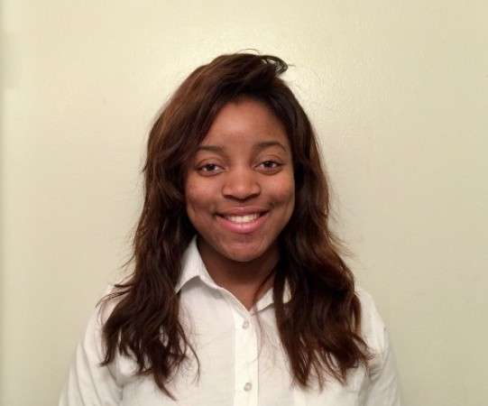

Ayobami Adebowale
My name is Ayobami Adebowale. I am currently pursuing a Co-terminal degree, and will be receiving my B.S. and M.S. in in Information Technology Management as well as a minor in Human Resources in the Spring of 2020. I recently discovered my love for leadership and programming after and made the very difficult decision after two years as a biomedical engineering pre-med major to switch majors. I have undergone several leadership trainings and attended many conferences to professionaly develop myself in hopes to use apply these experiences as a Scrum Master or Project Manager at an idealy small startup.
Here are some things that I like:
Music &Media
Music
Music is a huge part of my life! I listen to music a lot (at least one song and hour) and I think that is so healing and theraputic. It is amazing that there is a different song and genre fo revery mood and also to fit every type of personaloty.
These are some of my favorite genres:
RnB
Hip-Hop
Afro-beats
Alternative Hip-Hop
Modern Rock
And some of my favorite artists are
Summer Walker
Ari Lennox
Jhene Aiko
Bryson Tiller
Cruel Santino
Listen to one of my favorite feel-good songs by Bad Suns!
Netflix Shows and Youtube
I am a big fan of online streaming websites like Netflix and Youtube. Some shows on Netflix that I've watched in their entirety include:
The Office (this show has a cult following for a reason)
Scandal
How To Get Away With Murder
Working Moms
These are some popular vidoes from my favorite YouTubers